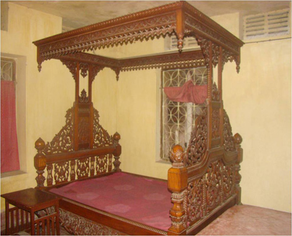

বৈচিত্র্যময় খাগড়াছড়ি

রাজা মংপ্র“ সেইন ছিলেন সত্যিকার অর্থেই একজন সৌখিন রাজা। ১৯৪২ সালে তার মেয়ে রাজকুমারী উনিকা দেবীর সাথে চাকমা রাজপরিবারের কুমার রাজিব রায়ের বিয়ে উপলক্ষ্যে এই রাজকীয় খাটটি তৈরি করান। বর্তমানের ব্রাহ্মণবাড়িয়া জেলা থেকে নেয়া দু’জন দক্ষ হিন্দু কার্পেন্টার বার্মাটিকের এই রাজকীয় খাটটি তৈরি করতে সময় নেয় ৪ বছর।
খাটটি তৈরির কাজ শেষ হবার ৭ দিনের মাথায় দু’জন কারিগরই মানিকছড়ির রাজবাড়িতে মৃত্যুবরণ করেন। মানিকছড়ির পতন আসন্ন ভেবে রাজপরিবারের সদস্যরা ভারতের উদ্দেশ্যে পাড়ি দেবার আগ মুহূর্তে এই রাজকীয় খাটটি রেখে গিয়েছিলেন। রাজবাড়ির হাজার হাজার মূল্যবান ফার্নিচার ক্রোকারিজ এবং আসবারপত্র দখলদার বাহিনী ও তাদের দোসররা লুট করে নিয়ে গেলেও সৌভাগ্যক্রমে এই রাজকীয় খাটটি অক্ষত রেখেছিল।
সম্ভবত দখলদার বাহিনীর কোন অফিসার এটি ব্যবহার করতো। মানিকছড়ির পতন অত্যাসন্ন ভেবে খাটটি ধ্বংস না করেই ওরা পালিয়ে গিয়েছিল। দেশ স্বাধীন হবার পর রাজবাড়িতে ফিরে এসে খাটটি পাওয়া গিয়েছিল। বীর মুক্তিযোগদ্ধা রাজা মংপ্র“ সেইন এই খাটটিতে শুয়ে শেষ নিঃশ্বাস ত্যাগ করেন। রাজা মংপ্র“ সেইনের স্ত্রী মং রাণী নিহার দেবীও এই খাটটিতে শুয়েই ১৯৯১ সালে শেষ নিঃশ্বাস ত্যাগ করেন। রাজপরিবারের সদস্যরা অত্যন্ত যতেœর সাথে এই রাজকীয় খাটটির রক্ষণাবেক্ষণ করে যাচ্ছেন।